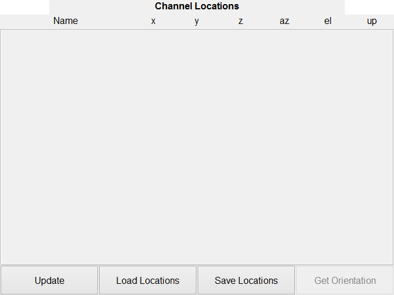

Contents
classdef channel_locations_ui < handle
% CHANNEL_LOCATIONS_UI Holds the gui elements for the channel locations panel % % CHANNEL_LOCATIONS_UI() create ui in new figure % CHANNEL_LOCATIONS_UI(OBJ) create ui in parent panel % CHANNEL_LOCATIONS_UI(OBJ, MAINOBJ) create ui with handle to main object % % Example 1: % obj = channel_locations_ui % % Example 2: % Parent = figure % obj = channel_locations_ui(Parent) % % CHANNEL_LOCATIONS_UI Methods: % channel_locations_ui - Constructor % pbLoadLocs_Callback - Load Locations Callback % pbSaveLocs_Callback - Save Locations Callback % pbGetOrien_Callback - Get Orientations Callback % pbUpdateLocs_Callback - PushButton Update Channels Callback % pbUpdateChans_Callback - PushButton Update channel names Callback % graphicsCode - Graphics Generation Code % % CHANNEL_LOCATIONS_UI Properties: % Parent - Handle of panel to place ui in % MainObj - Handle of main object % Name - Name of UI % ChanNames - Channel names % LocPath - Path of locations file % LocName - Name of locations file % OptionsStr - String containing the property names % UI - Cell UIs for the options % Update - Update callback handle % Tag - Tag to find object % % Written for the BSc graduation project Acoustic Enhancement via % Beamforming Using Smartphones. % % Team: S. Bosma R. Brinkman % T. de Rooij R. Smeding % N. van Wijngaarden E. Wouters % % Supervisor: Jorge Martínez Castañeda % % Contact: E.H.Wouters@student.tudelft.nl % % See also BF_DATA, MAIN_WINDOW
Properties
properties
Parent % Handle of panel to place ui in
MainObj % Handle of main object
Name = 'Channel Locations'; % Name of UI
ChanNames = {}; % Channel names
LocPath = [pwd,'\files']; % Path of locations file
LocName = 'Locations1.mat'; % Name of locations file
OptionsStr = {'Name','x','y','z','az','el','up'}; % String containing the property names
UI % Cell UIs for the options
Update % Update callback handle
Tag = 'channel_locations_ui'; % Tag to find object
end
% Methods
methods
function obj = channel_locations_ui(parent, mainObj)
Parse Input
figure Handle
if nargin == 0 obj.Parent = figure('Name',obj.Name,'NumberTitle','off','resize','on'); elseif nargin >= 1 if ishandle(parent) obj.Parent = parent; else warning(['First argument needs to be a handle,'... 'new figure created.']); obj.Parent = figure('Name',obj.Name,'NumberTitle','off','resize','on'); end end if nargin >= 2 obj.MainObj = mainObj; else obj.MainObj.DataBuffer = bf_data(obj.MainObj); obj.MainObj.DataBuffer.setNChan(1); obj.MainObj.DataBuffer.setTotalSamples(48000); end % Graphics Code obj.UI = obj.graphicsCode(); % Link handle of update callback obj.Update = @obj.pbUpdateChans_Callback; % Debug % assignin('base','obj',obj);
end
ans =
channel_locations_ui with properties:
Parent: [1x1 Figure]
MainObj: [1x1 struct]
Name: 'Channel Locations'
ChanNames: {}
LocPath: 'D:\android-beamforming\10 - Code\03 - Beamforming\Beamfor...'
LocName: 'Locations1.mat'
OptionsStr: {'Name' 'x' 'y' 'z' 'az' 'el' 'up'}
UI: [1x1 struct]
Update: @(varargin)obj.pbUpdateChans_Callback(varargin{:})
Tag: 'channel_locations_ui'
Load Locations Callback function
function pbLoadLocs_Callback(obj,~,~) [name1,path1] = uigetfile(... {'*.mat','MAT-files (*.mat)';... 'Save Locations to File',fullfile(obj.LocPath,obj.LocName)}); if ischar(name1) && ischar(path1) obj.LocPath = path1; obj.LocName = name1; file1 = load(fullfile(obj.LocPath,obj.LocName),'ChanNames','Locations'); obj.MainObj.DataBuffer.setLocations(file1.Locations,file1.ChanNames,1); % warning('File does not have the required variables ChanNames and Locations.'); obj.update(); end end
Save Locations Callback function
function pbSaveLoc_Callback(obj,~,~) if obj.MainObj.DataBuffer.IsInitialized [name1,path1] = uiputfile(... {'*.mat','MAT-files (*.mat)';... 'Save Locations to File',fullfile(obj.LocPath,obj.LocName)}); if ischar(name1) && ischar(path1) obj.LocPath = path1; obj.LocName = name1; ChanNames = obj.MainObj.DataBuffer.ChanNames; %#ok<PROP,NASGU> Locations = obj.MainObj.DataBuffer.getLocations; %#ok<NASGU> save(fullfile(obj.LocPath,obj.LocName),'ChanNames','Locations'); end end end
Get Orientations function
function pbGetOrien_Callback(~,~,~) warning('Get orentations is not yet implemented') end
Update Locations Callback function
function pbUpdateLocs_Callback(obj,~,~) % Read data chanNames = cell(size(obj.UI.Channels,1),1); locations = zeros(size(obj.UI.Channels,1),6); for ii = 1:size(obj.UI.Channels,1) chanNames{ii} = obj.UI.Channels{ii,1}.String; if isempty(chanNames{ii}) obj.MainObj.DataBuffer.removeChan(obj.MainObj.DataBuffer.ChanNames{ii}); obj.pbUpdateChans_Callback(); return end for jj = 1:5 locations(ii,jj) = str2double(obj.UI.Channels{ii,jj+1}.String); % Text edit for {'x','y','z','az','el'} obj.UI.Channels{ii,jj+1}.String = mat2str(locations(ii,jj)); % Write back verified data end locations(ii,6) = obj.UI.Channels{ii,7}.Value; %#ok<PFSAME> % Checkboxes for 'up', Face Up state end obj.MainObj.DataBuffer.setChanNames(chanNames); obj.MainObj.DataBuffer.setLocations(locations); end
PushButton Update Channels Callback
function pbUpdateChans_Callback(obj,~,~) m=length(obj.OptionsStr)+2;n=max(7,obj.MainObj.DataBuffer.NChan); % Set height and width of grid % Clean up ui elements oldUI = findobj('Tag','ChanMap'); if ~isempty(oldUI) delete(oldUI); clear('obj.UI.Channels'); end if obj.MainObj.DataBuffer.IsInitialized % Create edit boxes obj.UI.Channels = cell(obj.MainObj.DataBuffer.NChan,length(obj.OptionsStr)); for ii = 1:obj.MainObj.DataBuffer.NChan % Create edit boxes for options obj.UI.Channels{ii,1} = uicontrol(obj.UI.Panel,'Style','edit','Tag','ChanMap',... 'String',obj.MainObj.DataBuffer.ChanNames{ii},'Units','Normalized',... 'Position',grid2pos([1,ii, 3,1, m,n]),'Callback',@obj.pbUpdateLocs_Callback); for jj = 2:length(obj.OptionsStr)-1 obj.UI.Channels{ii,jj} = uicontrol(obj.UI.Panel,'Style','edit','Tag','ChanMap',... 'String',obj.MainObj.DataBuffer.Locations(ii,jj-1),'Units','Normalized',... 'Position',grid2pos([jj+2,ii, 1,1, m,n]),'Callback',@obj.pbUpdateLocs_Callback); end % Checkboxes for 'up', Face Up state obj.UI.Channels{ii,length(obj.OptionsStr)} = uicontrol(obj.UI.Panel,'Style','checkbox','Tag','ChanMap',... 'Units','Normalized','Value',obj.MainObj.DataBuffer.Locations(ii,6),... 'Position',grid2pos([m,ii, 1,1, m,n, 0.3]),'Callback',@obj.pbUpdateLocs_Callback); end else % Label for when no channels present obj.UI.Channels = cell(1); obj.UI.Channels = uicontrol(obj.UI.Panel,'Style','text','FontWeight','Bold',... 'String','No Channels Found','Units','Normalized','Tag','ChanMap',... 'Position',grid2pos([2,2,1,1,3,3])); end end function UI = graphicsCode(obj) % GRAPHICSCODE Graphics Code % Graphics Code parent = obj.Parent; optionsStr = obj.OptionsStr; nProps = length(optionsStr); m=4;n=10; % Set height and width of grid % Create Header and Buttons UI.Header = uicontrol(parent,'Style','text',... 'String','Channel Locations','FontWeight','Bold','Units','Normalized',... 'Position',grid2pos([2,1, m*2-2,0.5, m*2,n]),'Tag','ChanHeader'); % Create labels for options string channels = cell(nProps,1); channels{1} = uicontrol(parent,'Style','text',... 'String',obj.OptionsStr{1},'Units','Normalized','Tag','ChanHeader',... 'Position',grid2pos([1,1.5, 3,0.5, nProps+2,n])); for ii = 2:length(obj.OptionsStr) channels{ii} = uicontrol(parent,'Style','text',... 'String',optionsStr{ii},'Units','Normalized','Tag','ChanHeader',... 'Position',grid2pos([ii+2,1.5, 1,0.5, nProps+2,n])); end UI.Channels = channels; UI.Panel = uipanel('Parent',parent,'Position', grid2pos([1,2, m,n-2, m,n])); % Add buttons UI.PbUpdate = uicontrol(parent,'Style','pushbutton',... 'String','Update','Units','Normalized','Tag','ChanHeader',... 'Position',grid2pos([1,n, 1,1, m,n]),'Callback',@obj.pbUpdateChans_Callback); UI.PbLoad = uicontrol(parent,'Style','pushbutton',... 'String','Load Locations','Units','Normalized','Tag','ChanHeader',... 'Position',grid2pos([2,n, 1,1, m,n]),'Callback',@obj.pbLoadLocs_Callback); UI.PbSave = uicontrol(parent,'Style','pushbutton',... 'String','Save Locations','Units','Normalized','Tag','ChanHeader',... 'Position',grid2pos([3,n, 1,1, m,n]),'Callback',@obj.pbSaveLoc_Callback); UI.PbGetOrientations = uicontrol(parent,'Style','pushbutton','Tag','ChanHeader',... 'String','Get Orientation','Units','Normalized','Enable','off',... 'Position',grid2pos([4,n, 1,1, m,n]),'Callback',@obj.pbGetOrien_Callback); % obj.pbUpdateChans_Callback(); end
end
end